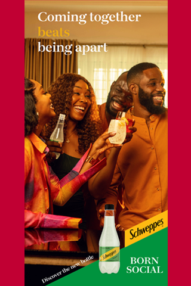

.Shun ethnic agenda, DG Audu, urges Igala indigenes The Governor of Kogi State, Alhaji Yahaya Bello, has charged members of the All Progressives Congress’ governorship campaign council to base their campaign on issues and performance of the current administration. The Director General of the campaign council, and Minister of and Steel Development, Prince Shaibu Abubakar Audu, charged Igala people to shun ethnic agenda that would not bring about development in the state. Speaking during the inauguration of the Kogi State APC governorship campaign council on Tuesday at the Government House in Lokoja, Governor Bello called on the campaign council not to preach ethnicity or religion but base their campaign on what the government had achieved in the last eight years and the ability of the governorship candidate, Usman Ododo, to build effectively on the current administration’s successes. He urged members and supporters of the party not to join issues with others who do not have anything to offer in terms of adding value to the state and its inhabitants. “Forget about liars, whose stock in trade is thuggery with nothing to offer. Go out there and preach what we have on ground in terms of infrastructure, not about ethnicity. Kogi State belongs to all of us. I have always said that Kogi State has the potential to be great if only we stop playing politics of ethnicity. “I want all of you to go and work for the success of the party and you will be adequately rewarded.” In his remarks, the Director General of the campaign council said his late father and former governor of the state had never believed in ethnic agenda, but had vision for the growth and development of the state. He noted that in the last eight years, Governor Yahaya Bello had demonstrated his father’s vision for the state through appointments, distribution and execution of projects across the three senatorial districts of the state without any iota of bias or sentiment. “My father had a pan Kogi vision and was never a leader that focused on Kogi East. “Any agenda that focuses on a particular senatorial district instead of Kogi State would not bring about justice, equity and development. We know that Igala people are agitating for return of power to the East but it must be discussed and resolved because power can never be taken with force.”
Presidential candidate of the Accord Party in the 2023 general elections, Christopher Imumolen, has expressed satisfaction over the appointments made by President Bola Tinubu since May 29. He commended the president for appointing youths into key positions in his government. Imumolen, while applauding the president’s decision, stated that it reflects his commitment to empowering young Nigerians and promoting youth inclusion in governance. Speaking with journalists, during his 40th post-birth celebration in Abuja yesterday, Imumolen said Tinubu’s recognition of youth potential is the first step to national integration and development. Noting that even though he wasn’t considered for an appointment, he observed that appointments of other youths would inspire young Nigerians to actively participate in politics and contribute to the nation-building process. He said: “Part of what we fought for was youth inclusion in governance, you know, during the last election, I was the only youth in that race, forget about what the speculation was by calculation or by global definition of youth. Once you are going to the age of 50 you are no longer a youth. I was the only person below that age. So, even those persons that were shouting obedient, obedient was not a youth. “I was the youngest in that race and what I was trying to drive at is that the youths need to be included. What is needed to drive our country to the next destination is what the youths carry. The youths of this nation are tired of being used and being dumped. The youth of this country is tired of not being included in the political calculation and narration of this country. “So, if you look at the appointment coming up now, I can tell you 85 to 90 per cent of appointments are youths and it is so laudable and it is so encouraging. I love it and that was what we fought for. If that is what we can achieve, believe me, I can tell you that I am the president of this country. It is not about me. It’s about Nigerian youths. We are the ones that carry the technical knowledge to solve our problems. “We are the ones that have the strength to deliver our country. When Nigeria gained its independence, those who fought for Nigeria did so when you were young, when they were in their youthful age. The man that moved the motion for independence was about 19 years old. You know we had a lot of heads of states in those days who were 32 years old, Gowon. “He was a bachelor when he became head of state, he got married as head of state. So, I begin to see that happening now with the appointments so I’m so satisfied with that. It is not about me even though I end up not being appointed but seeing that a large chunk of youths is being appointed, I am satisfied.” Stating that his birthday is another time to reach out to the poor, Imumolen called on Nigerians to spread love and reach out to the down-trodden.

The National Assembly Elections Petition Tribunal sitting at the Tafawa Balewa Square (TBS) Lagos has declared as inconclusive the election that produced Thaddeus Atta of the Labour Party (LP) as the elected representative for Eti-Osa Federal Constituency. It ordered the Independent National Electoral Commission (INEC) to withdraw the Certificate of Return issued by the Independent National Electoral Commission (INEC) to Atta. It also ordered INEC to conduct a supplementary election within 90 days in 33 polling units where it found that elections did not hold. The ruling followed a petition dated and filed on March, 16, 2023, by Olubankole Wellington, popularly known as Banky W through his lawyers, Dr. Kemi Pinheiro (SAN) leading Adetokunbo Davies in the law firm of Pinheiro LP, seeking to set aside the return of Atta. Wellington of the Peoples Democratic Party (PDP), Atta and Babajide Obanikoro of the All Progressives Congress (APC), contested to represent the constituency during the February 25 election. But INEC declared Atta the winner with 24,075 votes, over Wellington who polled 18,666 votes, and Obanikoro, who scored 16,901 votes. Disputing the declaration, Wellington raised several grounds, including that Attah was at the time of the election not qualified to contest the elections as he was not a member of the LP and was not sponsored by the party. He contended that there were no elections conducted in 38 Polling Units where about 29 thousand people who had their PVCs did not vote. It was also his case that the number of people who did not vote was more than the margin of lead between him and Atta. He argued that the electoral umpire ought to have declared the elections as inconclusive and ordered supplementary elections. Wellington sought several reliefs, including “that it may be determined and thus declared that the 2nd and 3rd respondents – Thaddeus Attah and LP were not elected and/or returned by a majority of lawful votes cast in the election into the membership of the House of Representatives for the Eti-Osa Federal Constituency held on the 25th February, 2023. “An order directing the 1st respondent (INEC) to withdraw the certificate of return issued to the 2nd respondent (Attah). “An order directing the 1st respondent (INEC) to conduct supplementary elections in the polling units in Eti-Osa Federal Constituency where elections were not held and/or the results were cancelled due to corrupt practices or irregularities.” In deciding the petition on its merits, the tribunal held that Wellington proved that elections did not hold in several polling units, which was contrary to the Electoral Act. In the circumstance, the tribunal granted reliefs 3, 4 and 5 of the Petition and ordered the following: “That the election is declared inconclusive. “That LP and Thaddeus Attah’s certificate of return is hereby withdrawn. “That a supplementary election should be conducted In all the polling units within Eti-Osa Constituency where elections did not hold.”

• Nigeria to seek partnership for AI development, service provision, others • Tijani assures of positive returns for tech sector, economy President Bola Tinubu will today address world leaders in his debut at the 78th United Nations General Assembly (UNGA), held under the Presidency of Dennis Francis of the Republic of Trinidad and Tobago, at the UN headquarters in New York, United States. As Heads of States take turns to deliver their addresses during the general assembly, Tinubu is expected to “highlight Nigeria’s efforts towards the attainment of the Sustainable Development Goals (SDGs), tackling climate change and ensuring international peace and security, among others. “The important issue of illicit financial flows and asset return will also be re-echoed, to encourage stronger international cooperation,” according to a statement signed by the spokesperson, Ministry of Foreign Affairs, Francisa Omayuli, yesterday. Tinubu’s attendance at UNGA marks his first since assuming the presidency in May this year. Addressing world leaders Tuesday evening, at about 6p.m. local time, the President will be the fifth African leader to speak on day one of the gathering and 14th speaker out of 20 leaders slated to speak today. On Wednesday, the President is slated to participate in the high-level dialogue on financing for development. He will attend a high-level meeting on Pandemic Prevention, Preparedness, and Response. On Thursday, he will be participating in the UN Secretary General’s Climate Ambition Summit and attend a high-level meeting on Universal Health Coverage. He is also expected to join another high-level panel on reform of the global financial architecture. On Friday, he will be attending the high-level meeting on the fight against tuberculosis. During the week, President Tinubu is scheduled to hold several bilateral meetings with world leaders, including the presidents of the United States, European Union Commission, Brazil, and South Africa, among others. He will also advance his economic development agenda for aggressive investments attraction in meetings with the global leadership of transnational firms. Among such firms are Microsoft, Meta, Exxon Mobil, General Electric, and a few others. ...


No fewer than 10,000 Christians drawn across the 19 northern states and the Federal Capital Territory on Monday, said President Bola Tinubu surprised Nigerians with the appointment of Christians into key positions despite the Muslim-Muslim ticket adopted by the All Progressives Congress (APC). Under the aegis of the All Christian Youths in Northern Nigeria (ACYNN), the group applauded the President for including Secretary to the Government of the Federation George Akume, Chief of Defense Staff General Christopher Musa, and other Christians in his government. The group also held a solidarity walk to congratulate the president for his victory at the tribunal and inclusive government. In a letter co-signed by its national president, Dominic Alancha, and four others, the group said Tinubu has surprised Christians with his appointments, especially after many expressed reservations over the Muslim-Muslim ticket. The group said it is particularly pleased with the choice of Musa to lead the Armed Forces, being a Christian from Kaduna who understands the impact of the insecurity in the state and other parts. According to him, the appointments are a testament to Tinubu’s incredible leadership style, centered on ingenuity and inclusiveness. “We have been profoundly impressed by your administration’s extraordinary efforts in appointing Northern Christians to pivotal political roles. This signifies a significant step towards inclusivity, granting a voice to marginalised, neglected, and often forgotten Christian minorities in Northern Nigeria especially those from the Middle-belt,” the group said. “At a point, we questioned whether we were recognised as Nigerian citizens with a stake in our beloved country at all. However, your swift and unprecedented appointments, such as naming His Excellency Senator George Akume from Benue State as Secretary to the Government of the Federation (SGF), have not only surprised us but also resonated with many well-intentioned Nigerians. This marks a historic moment in Nigeria’s history, and for this, we extend our heartfelt gratitude to you, Mr. President. “Your Excellency, you have also appointed General Christopher Gwabin Musa as the 18th Chief of Defence Staff (CDS) on the 19th of June, an exemplary choice who happens to be a Northern Christian from Zangon Kataf in Kaduna State. “This appointment is a testament to your leadership style, free from the divisive politics often seen in the Nigerian political arena. You govern with remarkable ingenuity and inclusiveness, uniting all Nigerians as one united nation. We wholeheartedly appreciate your approach, President Bola Ahmed Tinubu. “As Northern Christians, we initially had reservations about the Muslim-Muslim ticket of President Bola Ahmed Tinubu and Vice President Ibrahim Shettima. Yet, your inclusive governance has impressed us greatly.” The group, therefore, appealed to all well-meaning Nigerians from every geopolitical zone to join hands with the Tinubu administration in propelling Nigeria towards progress. It also called on “Christians and Nigerians, in general, to unite in prayer for the well-being of Tinubu and Vice President, Kashim Shettima.”
Former Vice President and the Presidential candidate of the Peoples Democratic Party (PDP), Atiku Abubakar, has challenged the Presidential Election Petition Court (PEPC) to explain the “ambiguities around why copies of the judgment bear the header of the Tinubu Presidential Legal Team.” In a statement signed and released on Saturday in Abuja by Phrank Shaibu, Special Assistant (Communications) to Atiku Abubakar, it was said that there was no intention to stir up controversy on the matter, “but it is very important that the PEPC should tell Nigerians why they chose to affix the header of the Respondents on the CTC copy of their judgment, whereas the copies that went to the petitioners did not have the same.” Phrank Shaibu said the court must explain why the Tinubu Legal Team is deemed to be accorded special privileges. The statement said: “It is very clear that there are many questions begging for answers, including why the PEPC came to the decision to avail the Respondents, especially the Tinubu Legal Team, of the first receipt of the CTC of the judgment before the Plaintiffs. “The curiosity is more confounding based on the fact that the lead counsel for Atiku and the PDP had pleaded in the open court to have express receipt of the judgment, to which Justice Haruna Tsammani agreed and promised to make the document available the following day, which was Thursday. “Nigerians want to know why the PEPC confers special privileges on the Tinubu Legal Team by making them have first custody of copies of the PEPC judgment, even though it was more urgent for the Petitioners who needed the document in order to file an appeal with the Supreme Court within 14 days, including weekends. “In the course of delivering its judgment, the PEPC had spoken of the petition it was ruling upon in a vexatious and denigrating language, as if it was a crime to bring a case of electoral banditry before the court. “However, unfolding developments after the court’s ruling elicit suspicions about whether or not the Tinubu Legal Team provided clerical services to the PEPC. Otherwise, how and when did the ‘Tinubu Presidential Legal Team’ creep into a document that was supposed to be the official document of the Court of Appeal of Nigeria? “We need to restate that the ‘Tinubu Presidential Legal Team’ on the top left-hand corner of all the 798 pages is neither a monochrome nor a metadata. It is actually a HEADER, meaning that except for a valid explanation, the Tinubu Presidential Legal Team is the originator of the document. For the purposes of clarity, “a header is text that is placed at the top of a page, while a footer is placed at the bottom of a page. Typically, these areas are used for inserting information such as the name of the document, the chapter heading, page numbers, creation date, and the like.” On the other hand, watermark is “a faint design made in some paper during manufacture that is visible when held against the light and typically identifies the maker of the document.” “The PEPC must, on its honour, if indeed it still has any, clarify why the court chose to put the header of the Tinubu Legal Team on a CTC copy of its judgment document, while the only emblem that should have been on the document is the stamp of the Court of Appeal of Nigeria. “Again, the PEPC must explain why it came to the discretionary decision of having the Respondents take custody of the judgment earlier in the day on Friday, while only making the same available to the Petitioners later in the day, and only after the lead counsel for Atiku and PDP had written a second letter (the first was on Thursday) to the court demanding copies of the judgment. “Moreover, we have it on good authority that when the PEPC was informed that the CTC copies of the judgment given to the Respondents were already circulating in the public domain with the header of TPLT on it, a further delay was necessitated by the need to remove the Tinubu Presidential Legal Team header before handing over the same to the lawyers of Atiku. “Whereas the legal team of the PDP and Atiku have statutory 14 days to prepare their appeal to the Supreme Court, the PEPC had erased 2 days out of that 14 days, no thanks to the PEPC, whose Chairman, Justice Tsamani had promised to make the CTC copy of the judgment available to Atiku a day after its judgment was rendered, which ought to have been on Thursday.” While emphasising the need for answers to the questions caused by controversy as the legal challenge shifts to the Supreme Court, the Atiku camp said “it will validate suspicions that there were external factors involved in the formulation of the judgment and bring the entire judiciary of Nigeria into disrepute. “Make no mistake about it. This legal challenge to the electoral banditry of February 25, which has now shifted to the apex court, is not about Atiku. It is indeed our last-ditch effort to salvage our country and deepen our democracy. Against the background of the decimation of nearly all of the institutions of state, including the Independent National Electoral Commission, which dragged us into this quagmire, our intent is to ensure that the judiciary, the last hope of the common man, does not go to the dogs.”
Calls For Multilateral Cooperation To Address Pressing Issues President Bola Tinubu, yesterday, in New Delhi, India, expressed Nigeria’s commitment to play a major role within the G-20 and contribute to shaping a more equitable world. Addressing world leaders at the 18th G-20 Leaders’ Summit, the Nigerian leader called for global unity and cooperation in tackling pressing challenges, fostering inclusiveness, and establishing a fairer world order. While acknowledging the vital role of the G-20 in shaping a rules-based world order that promotes shared prosperity and security, President Tinubu emphasised that most of today’s pressing issues are “international in character and cannot be addressed without multilateral cooperation.” “Therefore, stronger collaboration, cooperation, and partnerships among diverse regions are the pathways to a peaceful, prosperous, and sustainable future for our world. “This is why the role and contributions of the G-20 in shaping a new world order that is fair and rules-based can not be over-emphasised. A world that lives as one family, but is divided by staggering income inequalities and uneven access to basic social goods by the vast majority of our people cannot result in a peaceful and secure world where shared prosperity is achieved. “I hasten to add that such rules and global governance structures of our collective dreams must be collectively designed, collectively owned, and collectively managed. This is consistent with the true spirit of One Family, mutual respect, and sustainable development. “Nigeria is poised, able and willing to be a major player in this family of the G-20 and in shaping a new world, without whom, the family will remain incomplete,” he said. President Tinubu congratulated India for hosting the historic summit and for successfully landing on the moon under the visionary leadership of Prime Minister Narendra Modi. He described the achievement as an inspiration to all developing countries of the Global South. On the issue of African Union (AU) inclusion in the G-20, the Nigerian leader welcomed the decision, saying it “opens opportunities for future membership of the group in a manner that reflects the relative balance of power and inclusiveness of humanity as One Family.” Reflecting on the theme of the Summit: ‘One Earth. One Family. One Future,’ President Tinubu stressed the interconnectedness of global affairs and the need for collaborative efforts. He underscored the importance of tackling challenges related to technology, energy transition, and access to credit, as well as the growing socio-economic divide between those who have and those who do not. The President urged greater solidarity among nations, tasking advanced economies to support disadvantaged regions in the Global South and to promote climate justice. President Tinubu also called for the strengthening of international frameworks for resource mobilisation and governance that are based on the principles of justice, equity, and fairness. In addressing the sub-theme of Session II of the Summit, which is One Family, President Tinubu highlighted the magnitude of challenges facing humanity today. “The need for us to work together as one family has, therefore, become more imperative. We must strive to create a world of inclusiveness in which everyone has access to the basic necessities of life, and in a manner that widens and strengthens the ownership of our planet regardless of one’s economic, social, and political status.” President Tinubu urged the Global North, advanced economies, and multilateral institutions to mobilise resources and direct efforts to where help is needed most in the disadvantaged Global South. “By doing so, we will be building a society anchored on the strong values of tolerance and mutual respect, where diplomacy, dialogue, and cooperation take precedence over competition, conflict, and divisions, which are based on inflexible ideologies and belief systems,” the President concluded.


There are indications of political forces in the country tilting towards the All Progressive Congress, thereby engendering fears of rail-roading the country towards a one-party state. Two significant developments have emerged in this respect. One is the statement by Dr. Abdullahi Umar Ganduje, the National Chairman of the All Progressive Congress (APC) that the party was holding discussions to get some opposition political parties to collapse into the APC.. Two is the appointment of members of the opposition party into the President Bola Tinubu administration, which itself presents prospect of cross-carpeting in parties Ganduje, immediate past governor of Kano State and the newly appointed National Chairman of the All Progressives Congress (APC) tripped off the alarm bell when he said he envisioned the merger of APC with opposition parties and pointed to the development of a blueprint to achieve that. For him, such a move would improve the chances of the party, especially in 2027. In a separate view to this development, Osita Chidoka, a PDP stalwart and former Aviation Minister, warned that his party could become extinct if reforms were not carried out. He noted that: “The PDP is a government that was in power for 16 years. Its instinct is that of a government party; not an opposition party. And it has taken us eight years to begin to realise this. We smell the coffee; that it’s not four years and we are back…or we are coming back the next day…Now, we are beginning to see that PDP itself needs to be reformed. It needs to renew and re-imagine itself to be able to begin to play the role of opposition, knowing full well that we have a politician as president.” Notably, the PDP ceded some states in the south-east and south-south regions to a reinvigorated Labour Party (LP) in the 2023 presidential election. Following the victory of the APC in the February General elections, losers in search of relevance and perks of officialdom are tilting towards the ruling APC in ways that may swamp existing opposition parties in Nigeria. The strongest indication yet in this direction is the appointment of Nyesom Wike, the leader of a faction of the People’s Democratic Party and two-term Governor of Rivers State as Minister in President Tinubu’s cabinet. Added to this is the appointment of Chiedu Ebie, former Secretary to the State Government of Delta State as the chair of the Niger-Delta Development Commission (NDDC) by the president. Mr Ebie is a known ally Ifeanyi Okowa and James Ibori who are PDP stalwarts. Wike has indicated strong inclination to remain in the PDP, but given his role in the sustenance of PDP when it turned into opposition after losing to the current ruling party in 2015, his exit from the party might signal more difficulty for its survival. The consequence is that the opposition may become rudderless given the fact that only a handful of the existing 20 political parties can muster opposition to the policies of the ruling APC. This situation is not new. Since the inauguration of the fourth republic in 1999, the winner-takes-all Nigeria’s presidential system has shaped political actors towards moving into the ruling party. At some point, the PDP, hitherto the ruling party in the country almost turned into a behemoth to the extent that its officials boasted that the party would govern the country for two generations. Similarly, opposition elements of the period that aggregated into the APC had equally raised alarm about the authoritarian trend and the proclivity of the then PDP turning the country into a one-party state. The Former Lagos State governor, Senator Bola Ahmed Tinubu, who is now the president of the country warned at the time against allowing the country to drift into a one-party state. He noted then that the actions of the National Assembly that was dominated by PDP were drifting Nigeria towards an authoritarian state, particularly, its meddlesomeness in the scheduling of the dates and structure of elections for the Independent National Electoral Commission, INEC, as an autonomous agency. Other parties, such as the Peoples Redemption Party (PRP) that has similarly raised the alarm that Nigeria was heading towards a one-party state had in 2019 warned Nigerians about the antics of the ruling All Progressives Congress (APC) of making efforts to turn to a one-party state and riled at the notorious practice in the nation’s polity where politicians shamelessly switch to any ruling party upon defeat in election. The bane of Nigeria’s democracy is the inability of its political elite to form a political party in the strictest sense of the word. As the late Raheemat Momodu aptly put it: “Parties serve as the singular most important arena, avenue and medium for political participation everywhere in the world. Thus political participation must be channelled through the parties to access power and be part of government… a political party is the door and key to political participation and the engine room of democracy.” Edmurke Burke pointed to its national interest component when he defined a political party, as “a body of men united, for promoting by their joint endeavours the national interest, upon some particular principle in which they are all agreed.” If Nigerian politicians understand the meaning of political party and are not blinded by avarice, they would perhaps behave differently. In light of the foregoing, three major points need to be watched against sliding towards a single-party state, namely, the multi-ethnic nature of the Nigerian state, the nature of liberal democracy, and the beauty of opposition in a polity. The ethnic and linguistic diversity of Nigeria is legendary. Correspondingly, they exude cultural differences and manifest diverse visions of societal development. To undermine these diversities through some hegemonic design, whether using a single party system, or dominance of strategic national institutions, is to kill the national spirit and sound the death knell of the Nigerian state because the dynamics of diversity would, for sure, manifest in separatist impulses. Apart from that, the country loses the benefit of an alternative vision of societal development. The liberal democracy that the Nigerian elite chose in 1999 would be completely undermined by a drift into one-party state. Liberal democracy thrives in freedom of association and of free expression, anything less, is a barefaced authoritarian edifice. Opposition or dissent is important in a democracy. It has the inherent advantage of thwarting authoritarian temptation; and it enriches the national vision by constructive criticism of the power that be. As the Ghanaian scholar, Ansa Asamoa, once noted, the key trait of liberal democracy is the existence of multiparties with diverse beliefs and ideologies, and are a healthy phenomenon for the polity. It is in the overall national interest to avoid a single party system in Nigeria. If the African experience is any lesson for us, it is that such a development is the quickest road to rabid authoritarianism, and it must be avoided.